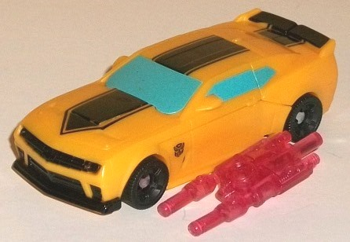
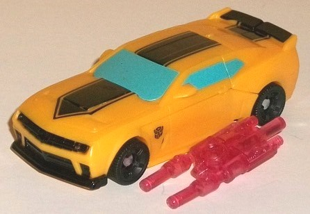

Allegiance : Autobot
Size : Legion
Difficulty of Transformation : Very Easy
Color Scheme : Moderately dull yellow, black, and some light sky blue, very dark glossy gray, and transparnet light red
Rating : 8.3
Price : ~$25 U.S.
(NOTE: Because this set is composed of repaints,
this is not a full-blown review. This mainly covers any changes made to
the set and the color scheme, and merely compares it to the original versions
of these molds. For a review on the original DotM Legion Bumblebee, go
here
.
For a review on the original version of Prime legion Knock Out-- the mold
used for Stinger-- go
here
. For a review
on the mass-release version of deluxe Strafe, go
here
.)
 Bumblebee
Bumblebee

Allegiance
: Autobot
Size
: Legion
Difficulty of Transformation
: Very
Easy
Color Scheme
: Moderately dull yellow,
black, and some light sky blue, very dark glossy gray, and transparnet
light red
Rating
: 8.3
Bumblebee has nearly
the exact same color scheme as the
solo-packed
legion release
of him in the AoE line (also a Wal-Mart exclusive),
but this time on the superior DotM mold, which makes me wonder why they
didn't use this mold for the other Wal-Mart exclusive release since it
was obviously available. Regardless, see that linked review for my general
thoughts on the colors; in general, I think this is a slight improvement
over the original DotM color scheme of this mold, with the yellow-and-light-blue
colors particularly popping next to each other. There are two small differences
with the paint apps when it comes to this and the solo-packed legion version,
however; this one has a robot face detailed with some dark glossy gray,
as opposed to the white of the solo-packed toy. This change I like, since
it's more movie-accurate and contrasts better. However, the paint apps
have been skimped on slightly more for this version, with the rear window
not being painted on this version and there being no black paint along
the side rims, either.
No mold changes have
been made to this version of Bumblebee, though he does come with the same
light transparent red blaster that
Prime legion
Bumblebee
came with-- though he can't store it in vehicle mode, unfortunately.
 Decepticon
Stinger
Decepticon
Stinger

Allegiance
: Decepticon
Size
: Legion
Difficulty of Transformation
: Very
Easy
Color Scheme
: Moderately light red,
black, and some metallic gunmetal gray, transparent light purple, and bright
purplish pink
Rating
: 7.3
Stinger, on the other
hand, takes the same color scheme as the
solo-packed
legion release
AND the same mold, and only changes up the placement
of the black paint apps a bit. In vehicle mode, this version lacks the
"V" stripes on the hood, but the sides look more interesting, with a three-striped
"sunray" sort of pattern eminating from the front wheel on each side as
opposed to the solid stripe on the solo-packed version. In robot mode,
the feet aren't painted black, but the lower legs below the knees are instead.
Aaand... that's really it, so see the earlier linked review for my thoughts
on the general color scheme and mold itself. Otherwise the core toy is
exactly the same for this release as for the solo-packed version.
No mold changes have
been made to this version, but like with Bumblebee, Stinger comes with
a transparent purple Prime Cyberverse-scaled weapon-- a sword, in this
case. Unlike Bumblebee, Stinger CAN store it in his vehicle mode, though.
 Strafe
Strafe
Allegiance
: Autobot
Size
: Deluxe
Difficulty of Transformation
: Easy
Color Scheme
: Dark blue, black,
silver, and some light electric blue
Rating
: 8.3
The Strafe released in
this set is exactly the same as the mass-release deluxe; no changes were
made whatsoever.
This three-pack release by Wal-Mart is pretty pointless, given their other exclusives. You've got a Strafe that's the same as the mass release; a Bumblebee that looks pretty much the same as the solo release, but with a slightly different mold; and a Stinger that uses the same ill-fitting Prime Knock Out mold, with only a few minor paint changes and two additional weapons. If you want all three of these toys and don't have either the mass-release Strafe OR the solo-packed legion versions, this is a recommended pick up since it's basically the same price as buying all three individually but with a better Bumblebee mold and additional weapons; otherwise, this set is an easy pass for all but the most hardcore completists.
Reviews by Beastbot